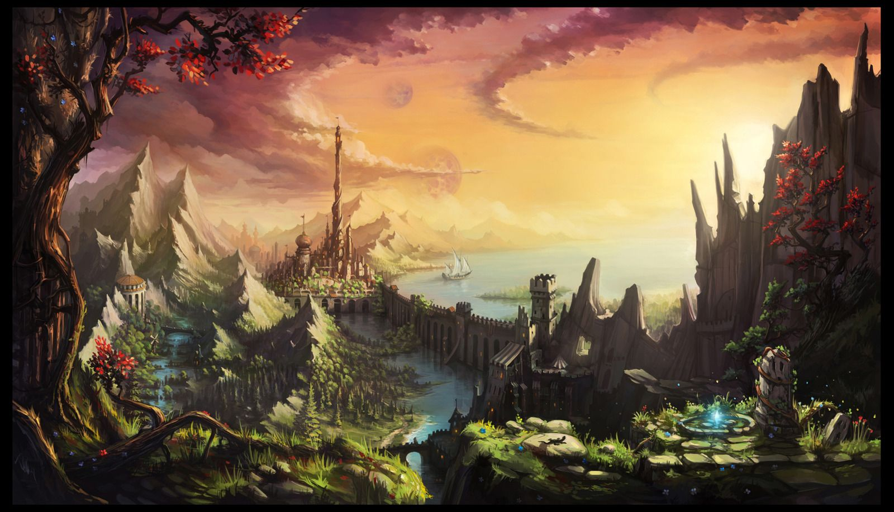
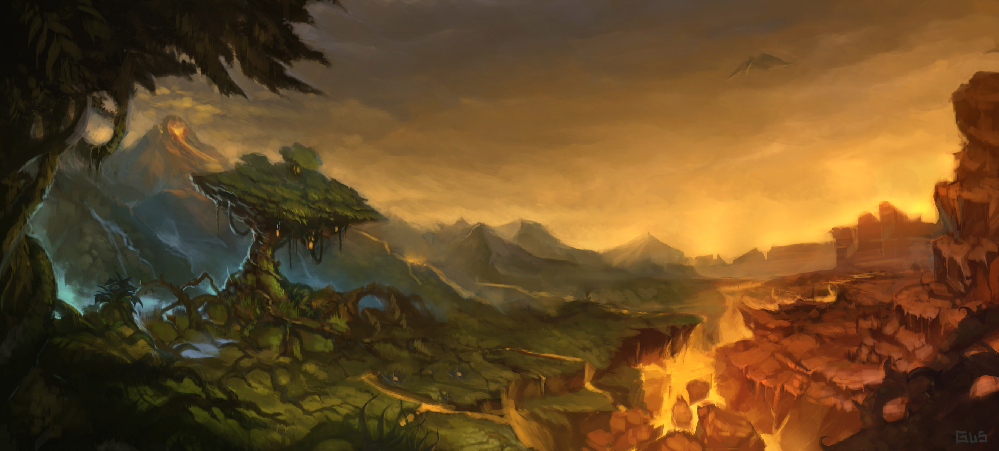
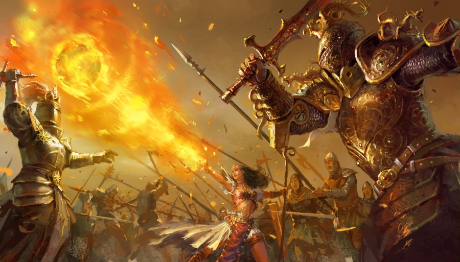

O Requiem Lunar
1 Mapa

(Clique para ver em tamanho original)
Capital de Midgard, cede da ordem dos magos. A maior parte dos magos de Midgard tem vínculo com a ordem e desempenham diferentes papeis nela, tais como papais políticos, educacionais e de prestação de serviços. A ordem é o poder que rege e protege a ilha. O atual lider da ordem ainda é Eivind, junto ao sua filha, a senhorita Alviira Lufifiel , também conhecida como A Fera Branca.A antiga sede da ordem dos magos, antes do grande maremoto. Neste local também está plantada a grande Yggdrasil, que serviu para curar os fracos em tempos antigos. A arvore é tratada como um semi-deus por todos os habilitantes de Midgard e até mesmo para os forasteiros. Alguns dizem que esta arvore possui inteligencia, dizem já terem a ouvido em suas mentes.
O antigo castelo é guardado por aquele que dizem ser o mais antigo de todos os habilitantes de Midgard, o Drow conhecido como Mestre Arcano, o qual poucos viram a verdadeira aparência.
2 História

A Selene de 20 anos atrás
A ilha de Selene fora outrora um lar de paz para humanos, elfos e anões. Rica em recursos, a ilha prosperava com seus três senhores, que a dividiam pacificamente, mesmo que houvesse vez ou outra algum pequeno conflito. Na região nórdica da ilha, vivia aquele que diziam ser o mais sábio entre os homens (mesmo que na prática ele fosse meio elfo), lorde Eivind Lutifiel , um mago honrado que buscou a paz entre os povos de Selene. No leste o guerreiro mais fiel à Bertove, aliado de longa data, Jonatan Astord . Astord poderia ser dito como o mais hábil guerreiro que já nasceu nas ilhas de Selene, suas noções de estratégia e seu carisma eram também formidáveis. E no oeste, a talentosa mercado Allina Lenarr , que conseguiu conquistar tudo que tem através da barganha e da lábia.
Selene sempre foi muito isolada dos demais continentes de Gaia, tornando difícil se aventurar para fora da ilha, alguns poucos navegantes conhecem rotas seguras e só as fazem se tem um objetivo muito bom, pois dizem que a mais curta das viagens demora cerca de 30 dias. O comercio fica limitado a própria ilha, um problema significativo, pois alguns recursos não podem ser facilmente produzidos na ilha, como alguns minérios, plantas e animais. Por isso há um esforço continuo para achar uma solução para comercializar com os continentes distantes.
Gaia possui quatro luas, e a vegetação, comportamento dos animais, estações e a mana (dentre outros fatores de ordem natural) se alternam de acordo com o movimento lunar. A dança das luas é algo estudado pelos magos, e é de conhecimento que quando as 4 luas estão sobre o mesmo céu em Selene a energia de mana flui grandiosamente.
O despertar
Por volta do ano de 570 ocorreu um evento que mudaria a pacífica Selene, "O Despertar". Ouve um enorme tremor, diversas casas cairam de imediato, os animais ficaram confusos, principalmente as aves. Os mares enlouqueceram, e os céus eram escuros, era como se os deuses da morte tivessem escolhido o dia final para os mortais.
O chão se rompeu nas extremidades leste e oeste da ilha, partindo-a em 3 pedaços. Os pedaços das extremidades sofreram muito mais com o evento, sendo o mar seu pior inimigo, o qual devastou as plantas e os animais pequenos, além de matar cerca de uma centena de humanos.
Após o terrível evento a fome alcançou aqueles que viviam nas bordas de uma forma jamais vista em Selene, e uma guerra se iniciou inevitavelmente, a guerra pelo centro... afinal, nenhum dos povos de Selene gostaria de experimentar a fome, mas não haveria alimento para todos em só uma fração das terras.
Nas taversas, os trovadores cantam que naquele dia uma fera despertou no fundos dos mares, e que quando se moveu a terra tremeu. Este é um boato que é aceito por muitos do povo.
A guerra pelo centro
Após "O Despertar" a guerra se iniciou, e foi natural que os clãs lutassem entre si, mesmo tendo sido aliados fieis em um passado recente. Durante o iniciou da guerra houve uma aliança entre a ordem dos magos e os cavaleiros seguidores de Astord para derrotar o clã dos mercadores do leste, que eram guiados pela senhorita Allina, com a promessa de que o centro seria dividido entre os dois clãs aliados. Logo após a queda de Allina, a promessa foi desfeita, e uma batalha entre Astord e Eivind se iniciou.
Eivind foi astuto, ele extendeu a aliança até que as 4 luas estivessem próximas de se alinharem, e quando se alinharam os magos eram muitas vezes superiores aos cavaleiros de Astord, houve então um massacre em meio as chamas arcanas. Astord foi obrigado a se render e se dirigir a extremidades leste, a mais prejudicada pelos eventos precedentes.
Midgard, Eastgard e Westgard
20 anos depois, Selene foi dividida entre os territórios de Midgard, contralado por Eivind e a ordem dos magos; Eastgard, dos cavaleiros de Astord e Westgard, da aliança de Allina.
Ainda hoje os moradores das extremidades odeiam Midgard e desejam acima de tudo uma revanche, mas conhecendo a impossibilidade disto eles fazem negociações, como se nada tivesse acontecido. Há uma paz forjada por um estado atual das coisas, mas é tal qual pisar no gelo fino, um pequeno deslize e tudo irá afundar.
3 Pre-Requisitos
Para criação de personagensDa quantidade de pontos e dinheiro
Os personagens iniciarão com 150 pontos e 5000 moedas.
Dos livros permitidos
Os seguintes livros são permitidos e suas regras serão aceitas: GURPS Módulo Básico (2ª edição), GURPS Magia, GURPS Grimório (no máximo 1 escola de magia por jogador), GURPS Fantasy (Todas as raças).
Da classe dos personagens
Os personagens devem ser todos magos, tendo minimamente aptidão mágica nível 1. Podem utilizar outros meios para atacar, tal como um cavaleiro mago. Devem escolher uma escola de magia a qual são altamente talentosos, para esta escola poderão desenvolver uma magia única do personagem.
Da motivação
Os pesonagens devem ter um objetivo muito forte que envolva sair para fora da ilha de Serene.
4 Sequencia de Eventos
(...)